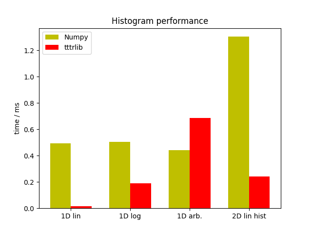

Note
Click here to download the full example code
Benchmark of histogram routines¶
A direct comparison of the performance of the tttrlib and the Numpy
histogram routines (Numpy version 1.13.3, Linux) demonstrates that except for
arbitrarily spaced histograms the tttrlib histogram routines outperform
numpy by at least a factor of 2 (1D log10 Histograms and 2D Histograms) or by a
factor of ~40 (1D linear Histograms)
#.. plot:: ../examples/miscellaneous/histogram_benchmark.py
The current histogram implementation in tttrlib is not particularly
optimized for speed, e.g., by making use of multiple cores. Nevertheless, in
special cases it outperforms Numpy. This comparison demonstrates that Numpy is
optimized for general use cases.
Note
As already stressed above, the histogram routines are (except for the
rarely used case of arbitrarily spaced histograms primarily optimized for performance (with room for improvements). The routines are internally used.
For other purposes than the applications tested for in tttrlib other libraries, e.g.
Boost histogram are a better
choice.

Out:
Testing linear histograms
-------------------------
time(numpy) = 0.1640345299999808
time(tttrlib) = 0.004787346333311386
tttrlib speedup: 34.26
time(numpy) = 0.1681507530000014
time(tttrlib) = 0.0630139263333452
tttrlib speedup: 2.67
time(numpy) = 0.14784021466668187
time(tttrlib) = 0.22922264133330827
tttrlib speedup: 0.64
Testing 2D Histogram linear spacing
---------------------------------------
time(numpy) (ms) = 0.6521674150000081
time(tttrlib) (ms) = 0.12147747399995978
tttrlib speedup: 5.37
import tttrlib
import numpy as np
import pylab as p
import timeit
print("\n\nTesting linear histograms")
print("-------------------------")
data = np.random.normal(10, 2, int(2e6))
bins = np.linspace(0, 20, 32000, dtype=np.float)
hist = np.zeros(len(bins), dtype=np.float)
weights = np.ones_like(data)
tttrlib.histogram1D_double(data, weights, bins, hist, 'lin', True)
# Compare speed to numpy
n_test_runs = 3
time_np_hist_lin = timeit.timeit(
lambda: np.histogram(data, bins=bins),
number=n_test_runs
)
time_tttrlib_hist_lin = timeit.timeit(
lambda: tttrlib.histogram1D_double(data, weights, bins, hist, 'lin', True),
number=n_test_runs
)
print("time(numpy) = %s" % (time_np_hist_lin / n_test_runs))
print("time(tttrlib) = %s" % (time_tttrlib_hist_lin / n_test_runs))
print("tttrlib speedup: %.2f" % (time_np_hist_lin / time_tttrlib_hist_lin))
bins = np.logspace(0, 3.5, 32000, dtype=np.float)
data = np.random.lognormal(3.0, 1, int(2e6))
hist = np.zeros(len(bins), dtype=np.float)
weights = np.ones_like(data)
tttrlib.histogram1D_double(data, weights, bins, hist, '', True)
n_test_runs = 3
time_np_hist_log = timeit.timeit(
lambda: np.histogram(data, bins=bins),
number=n_test_runs
)
time_tttrlib_hist_log = timeit.timeit(
lambda: tttrlib.histogram1D_double(data, weights, bins, hist, 'log10', True),
number=n_test_runs
)
print("time(numpy) = %s" % (time_np_hist_log / n_test_runs))
print("time(tttrlib) = %s" % (time_tttrlib_hist_log / n_test_runs))
print("tttrlib speedup: %.2f" % (time_np_hist_log / time_tttrlib_hist_log))
bins1 = np.linspace(1, 600, 16000, dtype=np.float)
bins2 = np.logspace(np.log10(bins1[-1]+0.1), 3.0, 16000, dtype=np.float)
bins = np.hstack([bins1, bins2])
hist = np.zeros(len(bins), dtype=np.float)
weights = np.ones_like(data)
tttrlib.histogram1D_double(data, weights, bins, hist, '', True)
n_test_runs = 3
time_np_hist_arb = timeit.timeit(
lambda : np.histogram(data, bins=bins),
number=n_test_runs
)
time_tttrlib_hist_arb = timeit.timeit(
lambda : tttrlib.histogram1D_double(data, weights, bins, hist, '', True),
number=n_test_runs
)
print("time(numpy) = %s" % (time_np_hist_arb / n_test_runs))
print("time(tttrlib) = %s" % (time_tttrlib_hist_arb / n_test_runs))
print("tttrlib speedup: %.2f" % (time_np_hist_arb / time_tttrlib_hist_arb))
def histogram2d(data, bins):
h = tttrlib.doubleHistogram()
h.setAxis(0, "x", -3, 3, bins, 'lin')
h.setAxis(1, "y", -3, 3, bins, 'lin')
h.update(data.T)
return h.getHistogram().reshape((bins, bins))
print("\n\nTesting 2D Histogram linear spacing")
print("---------------------------------------")
x = np.random.randn(5000)
y = 0.2 * np.random.randn(5000)
data = np.vstack([x, y])
bins = 100
hist2d = histogram2d(data, 100)
n_test_runs = 2000
time_np_2dhist_lin = timeit.timeit(
lambda : np.histogram2d(x, y, bins=bins),
number=n_test_runs
)
time_tttrlib_2dhist_lin = timeit.timeit(
lambda : histogram2d(data, bins),
number=n_test_runs
)
print("time(numpy) (ms) = %s" % (time_np_2dhist_lin / n_test_runs * 1000.0))
print("time(tttrlib) (ms) = %s" % (time_tttrlib_2dhist_lin / n_test_runs * 1000.0))
print("tttrlib speedup: %.2f" % (time_np_2dhist_lin / time_tttrlib_2dhist_lin))
N = 4
width = 0.35
time_tttrlib = (
time_tttrlib_hist_lin,
time_tttrlib_hist_log,
time_tttrlib_hist_arb,
time_tttrlib_2dhist_lin
)
time_numpy = (
time_np_hist_lin,
time_np_hist_log,
time_np_hist_arb,
time_np_2dhist_lin
)
ind = np.arange(N) # the x locations for the groups
labels = ('1D lin', '1D log', '1D arb.', '2D lin hist')
fig, ax = p.subplots()
rects1 = ax.bar(ind, time_numpy, width, color='y')
rects2 = ax.bar(ind + width, time_tttrlib, width, color='r')
# add some text for labels, title and axes ticks
ax.set_ylabel('time / ms')
ax.set_title('Histogram performance')
ax.set_xticks(ind + width / 2)
ax.set_xticklabels(labels)
ax.legend((rects1[0], rects2[1]), ('Numpy', 'tttrlib'))
p.show()
Total running time of the script: ( 0 minutes 4.667 seconds)